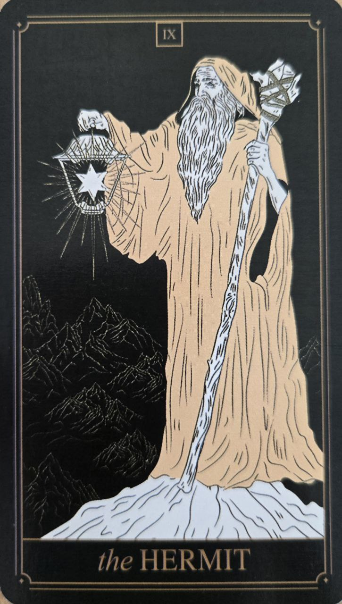

Pustovník je kartou hľadania múdrosti, sebapoznania a vnútorného pokoja. Predstavuje obdobie, keď sa človek na chvíľu odvracia od vonkajšieho sveta, aby lepšie porozumel sebe samému.
Táto karta nehovorí o osamelosti v negatívnom zmysle. Skôr naznačuje potrebu zastaviť sa, spomaliť a nájsť odpovede vo vlastnom vnútri.
Pustovník symbolizuje premýšľanie, introspekciu a osobný rast. Objavuje sa v obdobiach, keď je potrebné venovať viac pozornosti vlastným myšlienkam než názorom okolia.
Karta pripomína, že niektoré odpovede nemožno nájsť navonok, ale iba prostredníctvom vlastnej skúsenosti.
Na karte býva starší človek kráčajúci osamote s lampou v ruke. Svetlo lampy predstavuje poznanie, ktoré osvetľuje cestu krok za krokom.
Hora alebo skalnatá krajina v pozadí symbolizujú životné skúsenosti a výzvy, ktoré človek prekonal.
Pustovník nehľadá odpovede v knihách ani v autoritách. Jeho cesta vedie cez vlastné skúsenosti a osobné pochopenie.